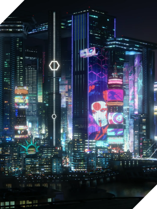

Найт-Сити изменит тебя навсегда!
Cyberpunk 2077 — приключенческая ролевая игра, действие которой происходит в мегаполисе Найт-Сити, где власть, роскошь и модификации тела ценятся выше всего. Ты играешь за V, наёмника в поисках устройства, позволяющего обрести бессмертие. Ты сможешь менять киберимпланты, навыки и стиль игры своего персонажа, исследуя открытый мир, где твои поступки влияют на ход сюжета и всё, что тебя окружает.
-

- 
Играй и выигрывай!
Играй в Cyberpunk 2077 и получи возможность выиграть консоль Xbox Series X или Sony PlayStation 5! Заполни форму ниже и приложи скриншот о покупке игры. Итоги розыгрыша будут подведены 1 февраля. Удачи! ;)


Полное погружение вместе с HP
Погрузись в современные экшен-игры с реалистичным изображением с помощью монитора с диагональю 23,8 дюйма, созданном для отображения максимально насыщенных цветов. Успевай реагировать на любые события с временем отклика 1 мс и частотой в 144 Гц!